Las cuatro hacen lo mismo: vender el outlet y los nuevos, enseñar la tara en foto y cobrar online. Lo que cambia es cómo se ven. Mirad cuál os representa mejor.
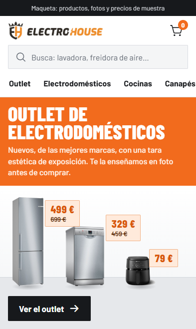
1El rótulo y el escaparate
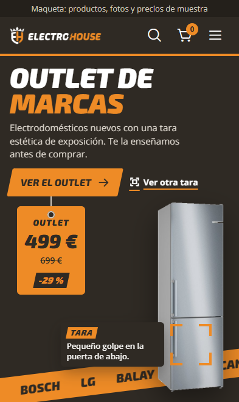
2La tara se escanea
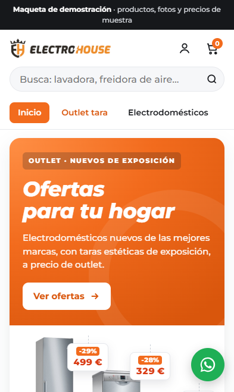
3Tienda clásica
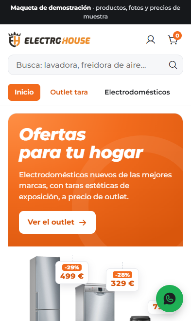
3bTienda clásica, pulida
Jose · Innovarte Agency 634 45 25 34 · innovarte.sl@gmail.com Noviembre de 2026
Electro House · Propuesta de diseño2
Lo que tienen las cuatro
Elijáis la que elijáis, la web funciona igual. Esto viene en todas:
Primero el móvilPensadas para quien busca desde el teléfono.
Buscador que entiende faltas«nebera» encuentra frigoríficos; «aifrayer», freidoras de aire.
Outlet y nuevos, separadosLos de tara y los de catálogo, cada uno en su sitio.
La tara en fotoCada aparato de outlet marca dónde está el defecto.
Una ficha por aparatoCon su propia dirección, para enviarla por WhatsApp.
Unidades únicasCada aparato de tara es una sola unidad y desaparece de la web al venderse.
Cocinas y canapésPresupuesto de cocina a medida y canapés desde 199 €.
WhatsApp a mano«¿Sigue disponible?» con un toque desde cada ficha.
Las cuatro de un vistazo
1
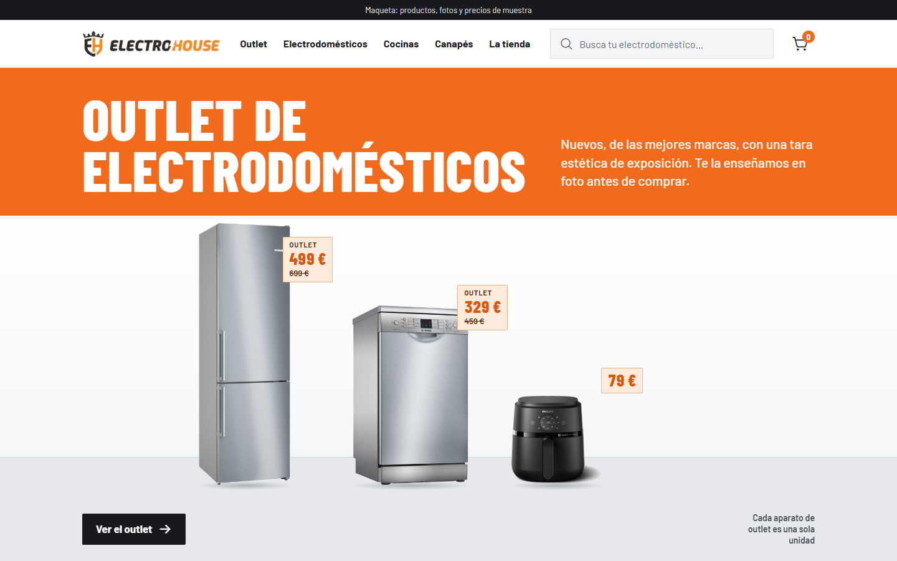
El rótulo y el escaparate
La web como vuestra fachada: la banda naranja del rótulo y los aparatos de pie en el escaparate, con su precio.
2
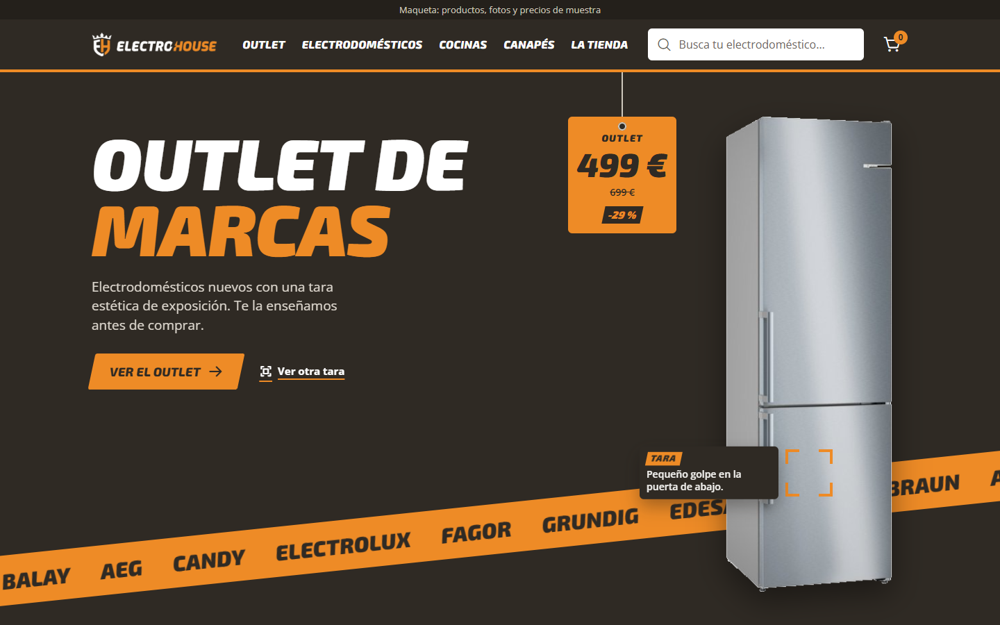
La tara se escanea
Con la imagen nueva de vuestros diseñadores: negro y naranja, letra en cursiva y un visor que encuentra la tara.
3
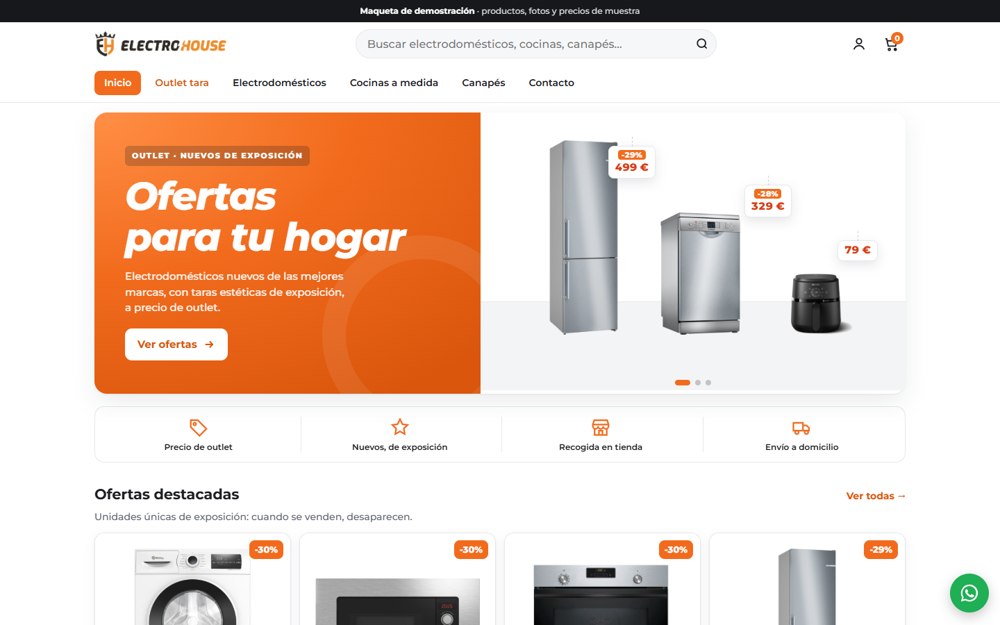
Tienda clásica
Una tienda online de las de siempre, con carrusel, ventajas y ofertas. La más cercana a la idea que nos enseñasteis.
3b
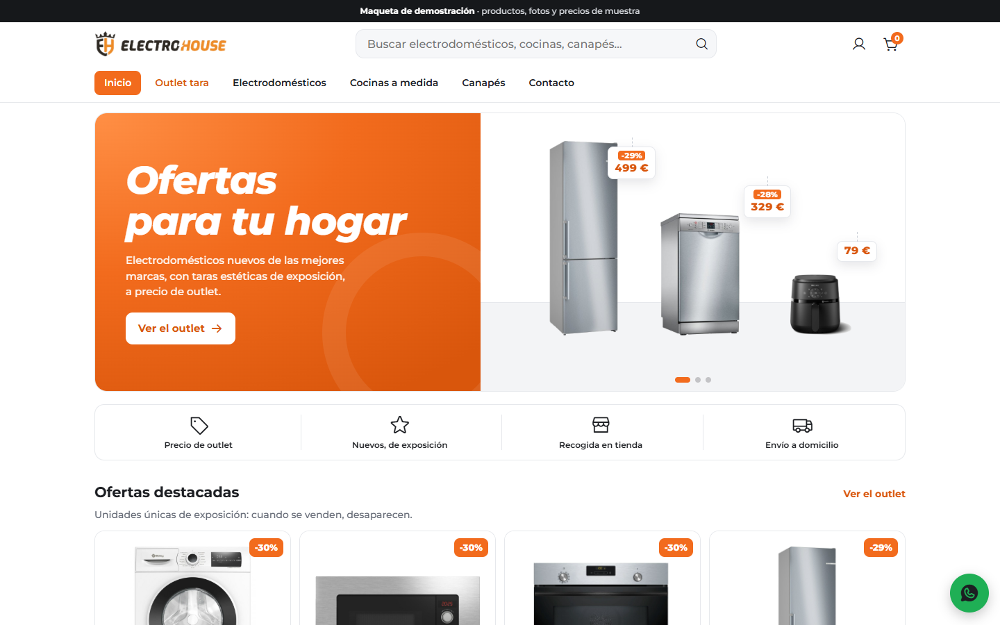
Tienda clásica, pulida
La misma que la 3, con los detalles afinados para que se vea más limpia. En la página 6 veis en qué cambia.
Productos, fotos y precios son de muestra hasta tener vuestro catálogo.Innovarte Agency
Electro House · Propuesta de diseño3
1
El rótulo y el escaparate
La web se parece a vuestra tienda de la calle Obispo Rocamora: arriba el rótulo naranja, debajo el escaparate.
Banda naranja con letra alta y estrecha, como las letras de vuestro rótulo.
Frigorífico, lavavajillas y freidora de pie en el escaparate, cada uno con su pegatina de precio.
Todo recto y limpio: blanco, gris y vuestro naranja. Sin adornos.
Sensación: tienda de barrio de toda la vida, seria y directa.
La 3b es muy parecida a la 3: misma estructura, mismas secciones y mismos textos. Cambian detalles que la hacen más limpia. Si os gusta la 3, esto os ayuda a elegir entre las dos.
3Con etiqueta sobre el titular y botón «Ver ofertas»3bTitular solo y botón «Ver el outlet»
Detalle
Opción 3
Opción 3b
Carrusel
Una etiqueta pequeña encima de cada titular («Outlet · Nuevos de exposición»)
Sin etiqueta: el titular habla solo
Botones al outlet
«Ver ofertas», «Ver todas»…
«Ver el outlet» siempre, el mismo texto en toda la web
Iconos
En naranja
En gris oscuro: el naranja queda solo para precios y botones
Banda de cocinas
Fondo oscuro junto a la foto
Fondo blanco junto a la foto
Categorías
Fila de tarjetas que se desliza
Cuadrícula con una casilla grande
Acabado
Sombras más marcadas
Sin sombras de relleno y el mismo redondeo de esquinas en todo
La primera pantalla del móvil, tal cual la verá un cliente al entrar.
1El rótulo«Outlet de electrodomésticos» en la banda naranja y tres aparatos de pie con su precio. Botón «Ver el outlet».2El escáner«Outlet de marcas» sobre negro. El visor encuentra la tara y cae el precio. Botones «Ver el outlet» y «Ver otra tara».3El carruselTres diapositivas: ofertas, cocinas y canapés, con una etiqueta encima del titular. Botón «Ver ofertas».3bEl carrusel, limpioLas mismas tres diapositivas, sin etiqueta y con «Ver el outlet».
Electro House · Propuesta de diseño8
La página principal, de arriba abajo
El orden de las secciones en cada opción. Todas acaban invitando a venir a la tienda.
1El rótulo y el escaparate
Rótulo y escaparate
Unidades únicas carril de outlet
Qué es la tara
Busca por tipo cuadrícula
Nuevos de catálogo
Cocinas a medida foto con panel naranja
Canapés «199 €» gigante
Ven a verla en persona
Cabecera: blanca, con buscador y menú en línea.
2La tara se escanea
El escáner de tara
Unidades únicas etiquetas negras
Qué es la tara con el visor
Canapés etiqueta colgada
¿Qué necesitas? dibujos de aparatos
Nuevos de catálogo etiquetas blancas
Cocinas a medida todo en naranja
Tarjeta de visita de la tienda
Cabecera: negra con raya naranja; en el móvil, menú y buscador a pantalla completa.
3Tienda clásica (y 3b)
Carrusel de tres anuncios
Barra de ventajas
Ofertas destacadas
Qué es la tara
Cocinas a medida banda con foto
Canapés «Desde 199 €»
Por categoría
Nuevos de catálogo
Ven a ver la tara en persona
Cabecera: blanca, con buscador grande y menú en pestañas.
Primera pantallaOutlet y taraResto de secciones
Electro House · Propuesta de diseño9
Cómo se enseña la tara
En las cuatro, cada aparato de outlet lleva su aviso «TARA · UNIDAD ÚNICA» con lo que tiene, y en su página «Ver la tara» la marca sobre la foto. Cambia cómo se dibuja.
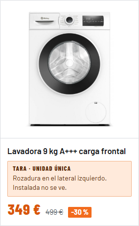
1Pegatina y círculoTarjeta blanca y recta, pegatina naranja clara y el descuento en una cajita. Un círculo naranja marca la tara en la foto.
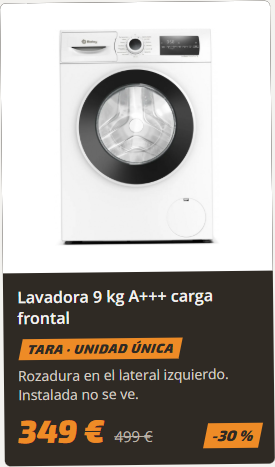
2Etiqueta de outlet y visorTarjeta negra como la etiqueta del manual, con la cinta naranja inclinada. Cuatro esquinas se cierran sobre la tara. Los nuevos van en blanco.
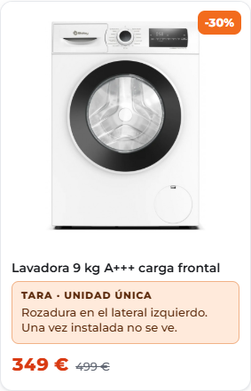
33bTarjeta redondeadaEsquinas suaves, el descuento en una pastilla naranja arriba y la pegatina redondeada. Un círculo naranja marca la tara.
Electro House · Propuesta de diseño10
Cocinas a medida
Así aparece la sección de cocinas en la página principal de cada opción.
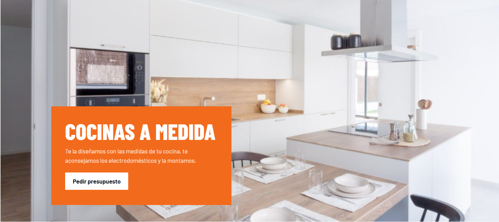
1La cocina a todo lo ancho con un panel naranja encima y el botón «Pedir presupuesto».
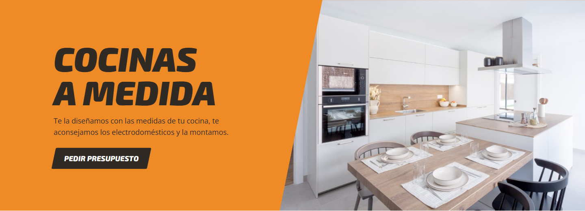
2Sección entera en naranja, letra grande en cursiva y la foto cortada en diagonal.
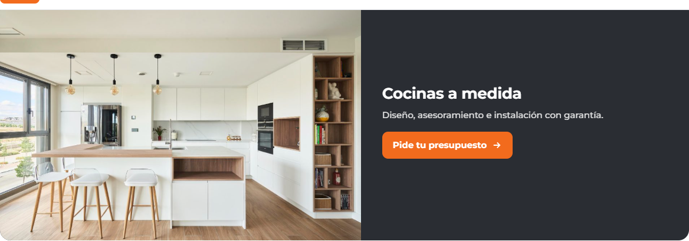
3Banda con la foto a la izquierda y el texto sobre fondo oscuro.
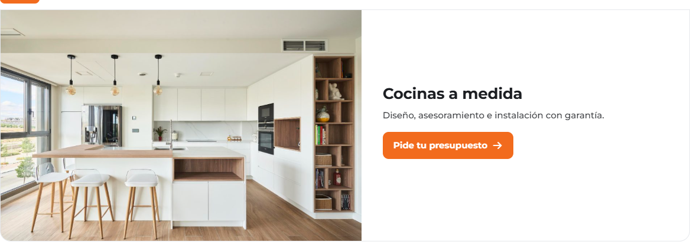
3bLa misma banda, con el texto sobre fondo blanco.
En las cuatro, la página de cocinas tiene su formulario: nombre, teléfono, medidas aproximadas y fotos de la cocina del cliente.
Electro House · Propuesta de diseño11
La página de cada aparato
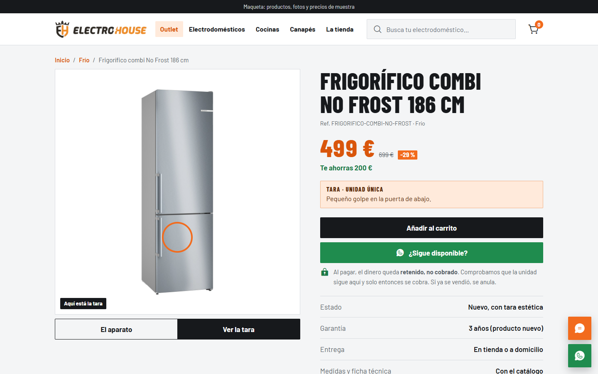
1Título alto en mayúsculas, precio grande en naranja y botones rectos en negro y verde. «Ver la tara» dibuja un círculo sobre el golpe.
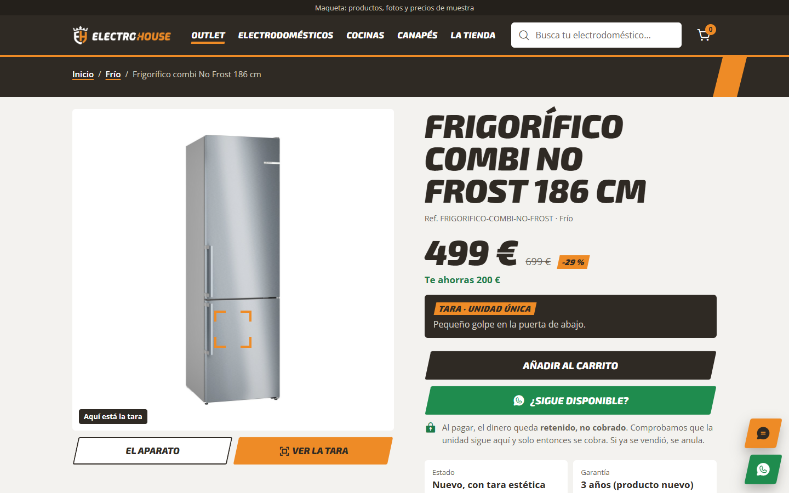
2Banda negra arriba y botones inclinados. «Ver la tara» pasa el escáner y cierra el visor sobre el golpe. Datos en cuatro recuadros.3Título normal, «Añadir al carrito» en naranja y redondeado, y ventajas con marcas naranjas. «Ver la tara» con círculo.
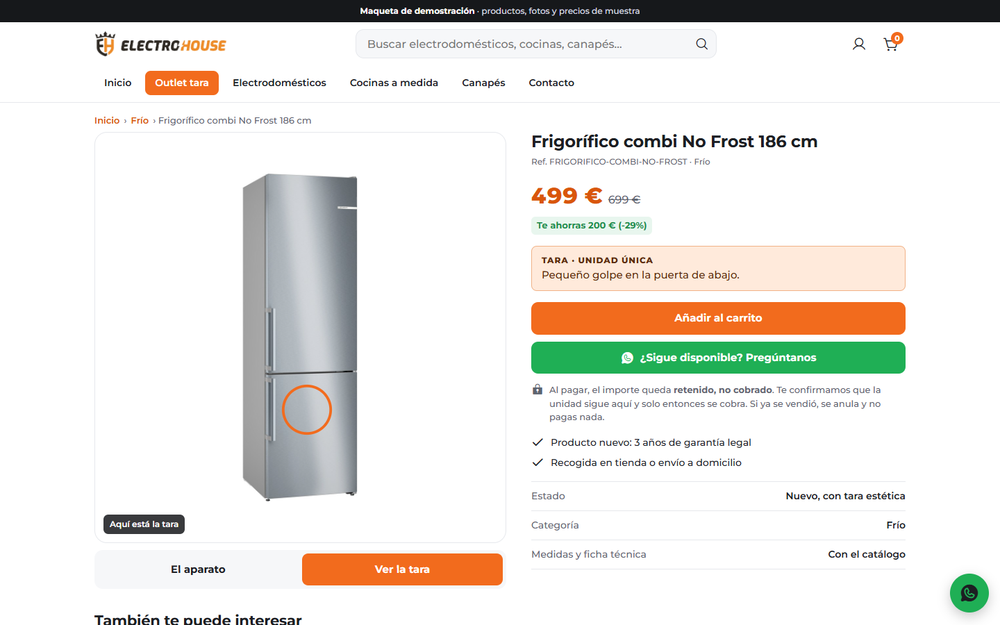
3bIgual que la 3, con las marcas de la lista en gris oscuro.
En las cuatro: botón «¿Sigue disponible?» por WhatsApp, precio con el ahorro y los datos de estado, garantía y entrega.
Electro House · Propuesta de diseño12
En resumen
1 El rótulo
2 El escáner
3 Clásica
3b Clásica pulida
Sensación
Tienda de barrio, seria y directa
Llamativa, con personalidad
Familiar, como las tiendas grandes
Familiar y más limpia
Imagen
La de vuestra fachada actual
La del rebranding nuevo
Tienda online conocida, en vuestro naranja
Igual que la 3, más ordenada
Lo más especial
El escaparate con los aparatos de pie
El escáner que encuentra la tara
El carrusel con tres anuncios
El carrusel, sin etiquetas
Encaja si…
queréis que la web se parezca a la tienda que ya conocen
queréis estrenar la imagen nueva y destacar
preferís algo que cualquiera sepa usar a la primera
os gusta la 3, pero la queréis más cuidada
1. Miradlas en el móvil
Abrid los cuatro enlaces y tocad como un cliente: buscad, entrad en un aparato y pulsad «Ver la tara».
2. Decidnos cuál
Elegid una. Si os gusta un detalle de otra, se puede llevar a la elegida.
3. La montamos con lo vuestro
Con vuestro catálogo, fotos y precios reales, terminamos la web elegida.